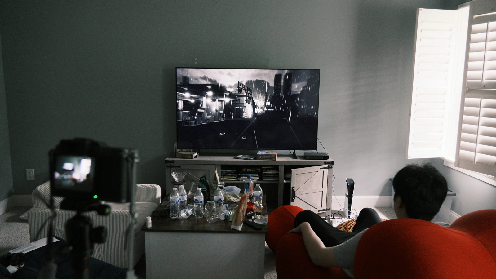
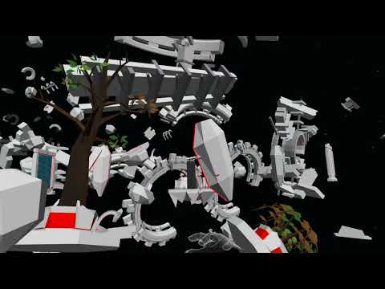

Projects
Games, tools, and experiments
in interaction.
Narrative puzzle game
Polaroid of Yesterday
A first-person game about photography, memory, and the stories we construct.

VR exploration
Gran Turismo
A journey through the ruins of a lost civilization.

Motion & interface design
Figures of Speech
An evolving collection of interactive studies from VegShark.com.
Game design resource · Opens in a new tab
The Vibe Coding Game Design Handbook
handbook.vegshark.com
VR interaction
VR for Skill Learning
Practical skills, procedural guidance, and spatial learning.
Physical computing
World Sensing Music Station
A handheld instrument that turns movement and space into sound.
AI game experiment
Multiverse All-Star Battlefront
Imagined characters become pixel-art fighters and generated comics.